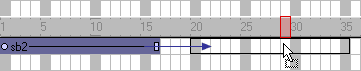

Using Director > Sprites > Positioning sprites > Changing when a sprite appears on the Stage
Using Director > Sprites > Positioning sprites > Changing when a sprite appears on the Stage |
Changing when a sprite appears on the Stage
A sprite controls not only where media appears on the Stage, but also when. You change when a sprite appears on the Stage by moving the sprite to different frames in the Score and by changing the number of frames the sprite spans. You can either drag sprites to new frames or copy and paste them. Copying and pasting is easier when moving sprites more than one screen-width in the Score. You can also copy and paste to move sprites from one movie to another.

Moving a sprite in the Score
To change when a sprite appears on the Stage:
1 |
Choose Window > Score to display the Score. |
2 |
Select a sprite or sprites, as described in Selecting sprites. |
3 |
Drag the sprite to a different frame. |
To move a sprite without spreading it over additional frames, hold down the Spacebar and drag. This technique is also useful for moving any sprite that consists mostly (or entirely) of keyframes. |
|
To copy or move sprites between frames:
1 |
Select a sprite or sprites, as described in Selecting sprites. |
2 |
Choose Edit > Cut Sprites or Edit > Copy Sprites. |
3 |
Position the pointer where you want to paste the sprite and choose Edit > Paste Sprites. |
If the pasting will overwrite existing sprites, choose a Paste option in the Paste Options dialog box: |
|
Overwrite Existing Sprites replaces the sprites with the content of the Clipboard. |
|
Truncate Sprites Being Pasted pastes the Clipboard contents in the space available without replacing existing sprites. |
|
Insert Blank Frames to Make Room adds new frames for the contents of the Clipboard. |
|